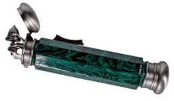
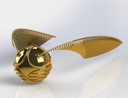

Artefatos Mágicos
Anel de Servolo Gaunt
O Anel de Servolo Gaunt é uma antiga relíquia da família Gaunt. Tom Riddle, mais tarde conhecido como Lord Voldemort, herdou o anel de seu avô, Servolo Gaunt, e o transformou em uma Horcrux após o assassinato de seu pai, Tom Riddle Sr. Para proteger sua Horcrux, Voldemort colocou uma poderosa maldição no anel, destinada a matar qualquer um que tentasse usá-lo ou destruí-lo.

Capa da Invisibilidade
A Capa da Invisibilidade é uma das três Relíquias da Morte. Diferente de outras capas de invisibilidade que perdem sua eficácia com o tempo, esta capa, dada ao terceiro irmão Peverell pela própria Morte, torna o usuário completamente invisível e é eficaz eternamente¹. A capa foi passada de geração em geração até chegar a Harry Potter, que a usou em várias ocasiões durante suas aventuras.

Chapéu Seletor
O Chapéu Seletor é o objeto responsável por determinar a qual das quatro casas cada novo aluno pertencerá. A cada ano, durante a cerimônia de seleção, o chapéu é colocado na cabeça dos novos estudantes e, após um breve momento de consideração, anuncia em voz alta a casa que melhor se adequa às qualidades e desejos do aluno. O chapéu pertencia a Godric Gryffindor e por isso, além de sua função primordial na seleção dos alunos, o Chapéu Seletor tem a habilidade de de revelar a Espada de Gryffindor para um verdadeiro Grifinório.

Desiluminador
O desiluminador, um artefato mágico criado por Dumbleodre é objeto, que se assemelha a um isqueiro de prata, tem a capacidade de remover fontes de luz do ambiente imediato e também de devolvê-las com um simples clique. Em Relíquias da Morte vemos outra função do desiluminador, quando Rony ouviu a Hermione falando seu nome pelo desiluminador ele clicou nele e aparatou para onde Harry e Hermione estavam.
Diadema de Rowena Ravenclaw
O Diadema de Rowena Ravenclaw é um dos objetos do quatro fundadores de Hogwarts, pertencia a casa da corvinal, é dito que aumanta a sabedoria de quem o usa. Foi roubado por Helena Ravenclaw, a filha de Rowena, que fugiu com ele na esperança de superar a inteligência de sua mãe. O diadema foi escondido em uma árvore na Albânia e permaneceu perdido por séculos até que Tom Riddle, que se tornaria Lord Voldemort, convenceu o fantasma de Helena a revelar sua localização. Ele então transformou o diadema em uma de suas Horcruxes.

Diário de Tom Riddle
O Diário de Tom Riddle foi a primeira Horcrux criada por Voldemort. Originalmente um diário em branco, Tom Riddle o transformou em uma Horcrux, após abrir a Câmara Secreta e usar o Basilisco para matar uma estudante. Anos mais tarde, o diário foi passado para Lúcio Malfoy, que o colocou entre os pertences de Gina Weasley. Através do diário, Voldemort conseguiu possuir Gina e forçá-la a reabrir a Câmara Secreta.

Espada de Godric Gryffindor
A espada de Godric Gryffindor foi forjada a mais de mil anos por duendes, a espada é feita de prta pura e adornada por Rubis. A espada possui a habilidade de absorver as saubstâncias que a fortalece, como veneno de basilisco tornando-a capaz de destruir Horcruexes, como feito pelo Harry em Câmara Secreta. A espada fica guardada e escondida no Chapéu Seletor e é revalada apenas para um verdadeiro grifinório.

Espelho de Ojesed
O Espelho de Ojesed é espelho antigo e ornamentado tem a capacidade única de mostrar o desejo mais profundo e desesperado do coração de quem o encara. Além de ser uma janela para os desejos, o Espelho de Ojesed foi utilizado por Dumbledore como um meio de proteger a Pedra Filosofal. Ele encantou o espelho para que apenas alguém que quisesse encontrar a pedra, mas não usá-la, pudesse obtê-la.

Mapa do Maroto
O Mapa do Maroto foi criado pelos marotos Aluado (Remo Lupin) Rabicho (Pedro Pettigrew) Almofadinhas (Sirius Black) e Pontas (Tiago Potter). O mapa é capaz de mostrar a localização exata de cada pessoa dentro dos limites de Hogwarts. Para ativar o mapa, é necessário tocar de leve com a varinha no pergaminho e dizer: “Eu juro solenemente que não pretendo fazer nada de bom”. Imediatamente, linhas de tinta começam a delinear as palavras e o mapa se revela, mostrando cada sala, corredor e canto do castelo, além de todas as passagens secretas e a localização de cada pessoa, representada por pegadas. Para desativá-lo, diz-se: “Malfeito feito”, e o mapa se torna um pergaminho em branco novamente.

Medalhão de Salazar Slytherin
O Medalhão de Salazar Slytherin é uma peça de joalheria antiga. Originalmente pertencente a Salazar Slytherin, um dos quatro fundadores de Hogwarts, o medalhão é um símbolo da casa Sonserina e foi passado como herança pela família Slytherin ao longo dos séculos. Este medalhão de ouro pesado é marcado com um “S” cravejado de pedras verdes brilhantes, representando a serpente, o emblema da casa Sonserina1. Além de seu valor como herança familiar, o medalhão ganhou notoriedade por ter sido transformado em uma Horcrux por Tom Riddle, mais conhecido como Lord Voldemort. Ele escolheu o medalhão por sua conexão com Slytherin e, portanto, com sua própria linhagem e ambição de pureza de sangue.

Pedra da Ressurreição
A Pedra da Ressurreição tem a aparência de uma simples pedra negra, mas com a capacidade de convocar sombras dos falecidos. Estes aparecem sem substância física, como ecos de quem eram em vida, e não podem interagir de forma tangível com o mundo dos vivos. Aqueles que foram trazidos de volta pela pedra não retornam verdadeiramente à vida e muitas vezes trazem consigo uma tristeza profunda, pois pertencem a outro lugar. Ao longo da história, a Pedra da Ressurreição foi passada de geração em geração, até ser incrustada no Anel de Servolo Gaunt, tornando-se uma das Horcruxes de Voldemort. Harry Potter, em um momento crucial de sua jornada, usou a pedra para convocar as sombras de seus pais, Sirius Black e Remo Lupin, buscando conforto e coragem antes de se sacrificar na Floresta Proibida.

Pomo de Ouro
O Pomo de Ouro é uma das bolas do Quadribol. É uma pequena esfera dourada do tamanho de uma noz, com asas de prata que lhe permitem voar em altas velocidades e direções aleatórias pelo campo de Quadribol. A captura do Pomo de Ouro é a responsabilidade do Apanhador e vale cento e cinquenta pontos para a equipe, além de sinalizar o fim do jogo. O Pomo de Ouro tem uma história fascinante; antes de sua invenção, um Pomorim de Ouro vivo era usado no jogo. No entanto, para proteger a espécie da extinção devido à caça excessiva, o Pomo de Ouro foi criado para substituir a ave no esporte.
Taça de Helga Hufflepuff
A Taça de Helga Hufflepuff